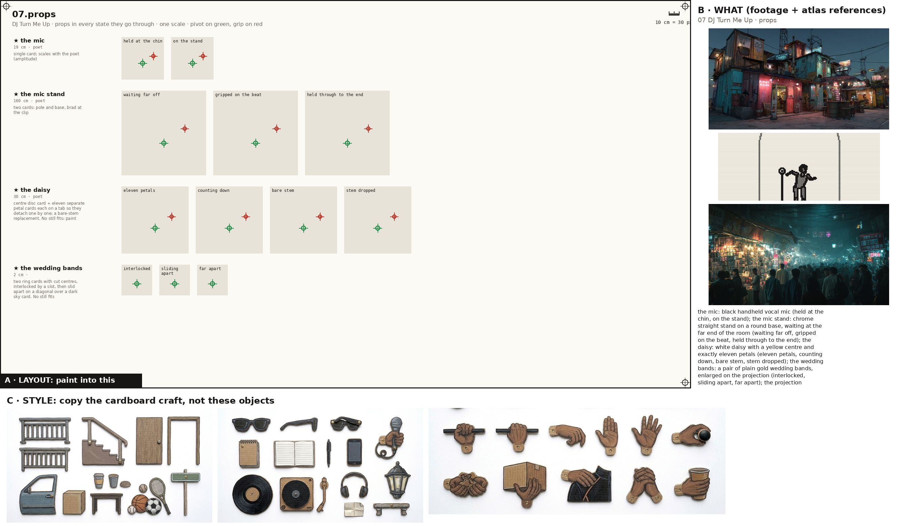
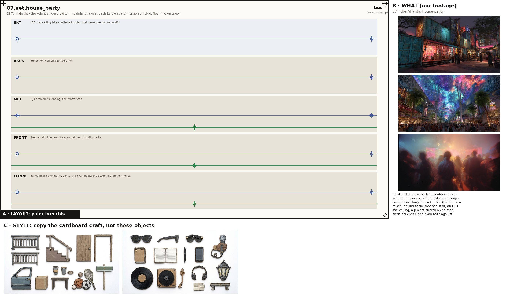
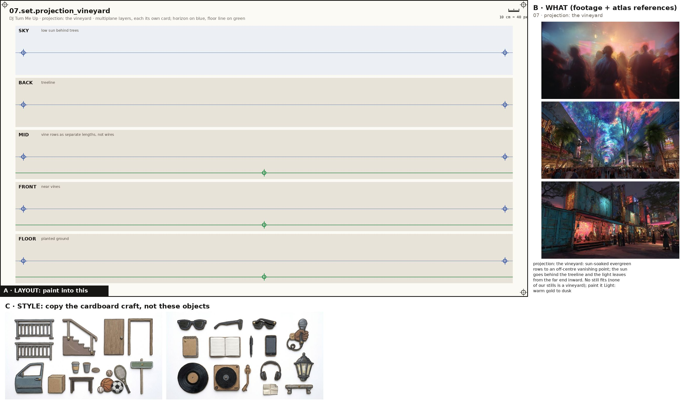
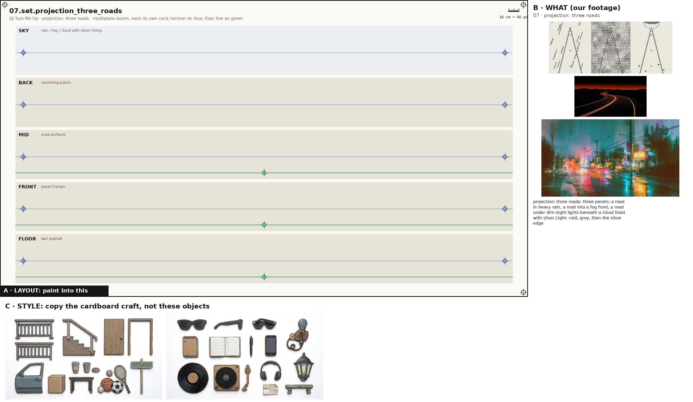
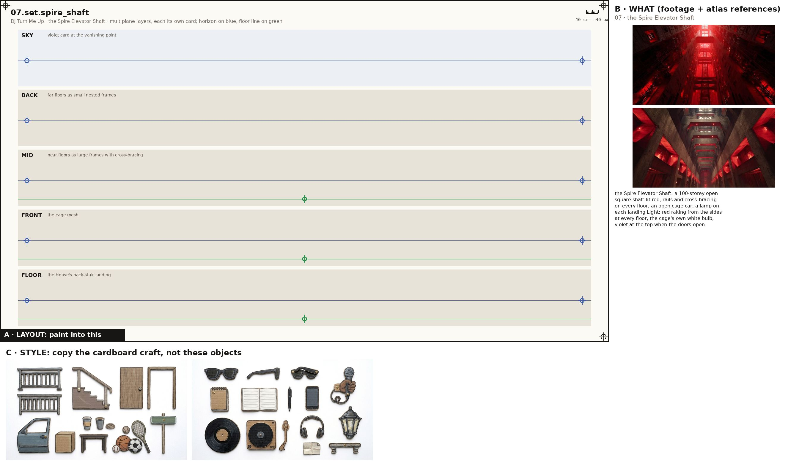
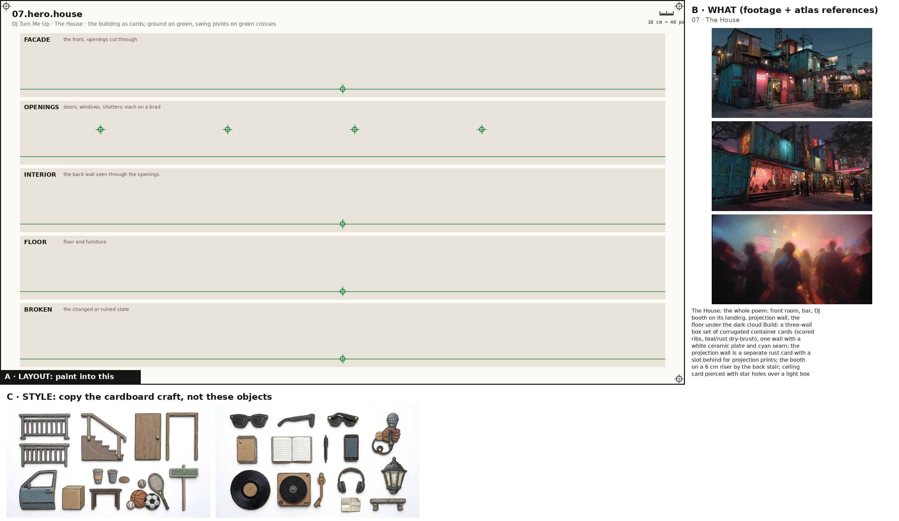
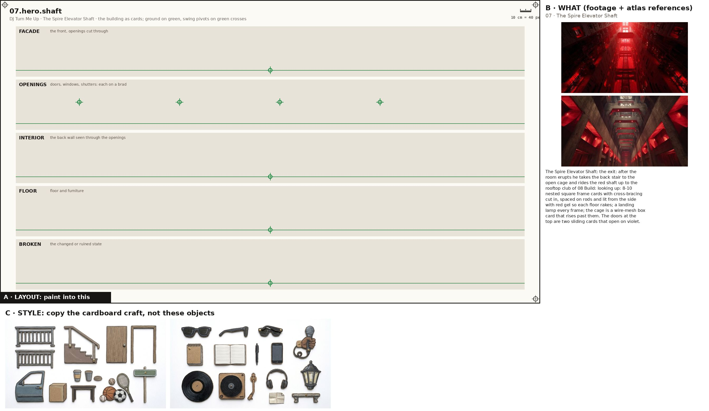
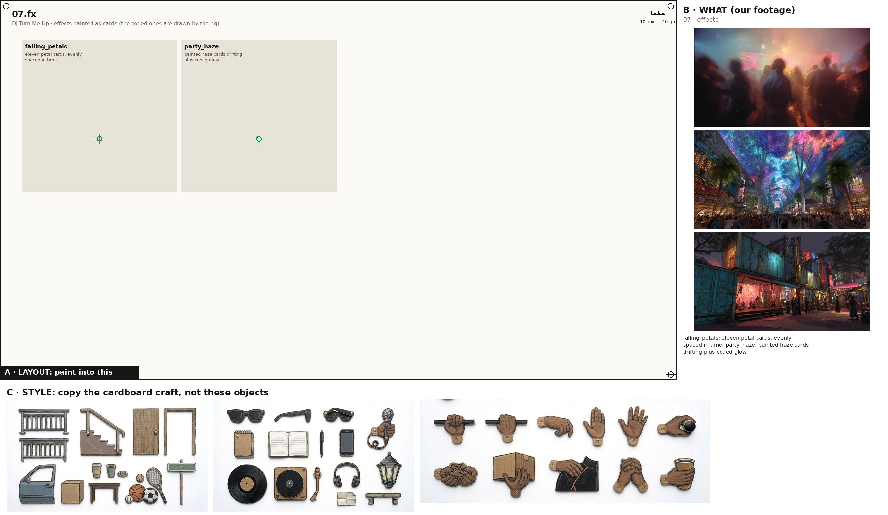

One image + one prompt each. The characters' action sheets are in the cast above; their costume kits are on the character kits page.

Props, every state props
Paint one sheet of cut-out puppet parts for a paper-puppet film, using the attached image. Panel A is the exact layout, panel B is our footage for these props (reference: copy the object, not the photo style), panel C is the style. STYLE (panel C): flat cards cut from corrugated cardboard, gouache with confident ink linework, the flutes faintly showing through the paint, a thin raw kraft-brown cut edge round every card, brass split-pin brads; shot flat-on, even light, no shadows, no perspective. Copy the craft from C, not the clothes in it. WHAT (panel B): the props of the poem 'DJ Turn Me Up', one row each, every state of a prop in its own cell, left to right: the mic: black handheld vocal mic (held at the chin, on the stand); the mic stand: chrome straight stand on a round base, waiting at the far end of the room (waiting far off, gripped on the beat, held through to the end); the daisy: white daisy with a yellow centre and exactly eleven petals (eleven petals, counting down, bare stem, stem dropped); the wedding bands: a pair of plain gold wedding bands, enlarged on the projection (interlocked, sliding apart, far apart); the projection wall: wall-sized projection on painted brick behind the bar showing the line's images (vineyard ghosts, diverging rings, trucked house, three roads, blank glow); the decks: two-deck controller with crossfader and glowing faders, a vinyl on a turntable, headphones (scratch, fader up, master to the top); the bar: home bar of dark wood with neon underglow, bottles behind (petals on it); lighter: plastic lighter, lit (raised); phone: smartphone, screen lit (raised); the speaker stacks: two tall black speaker stacks flanking the floor, perforated grilles that the ghosts drift behind (idle, pulsing, ghosts behind the mesh). Paint each state as a flat cardboard prop card at the size its cell gives, the same object across its row; a brass brad on the green cross (its pivot); where there is a red cross, that is where a hand grips it. LAYOUT (panel A): paint one card inside each grey ghost, in the same place, size and angle, inside its dashed outline; a brass brad exactly on every green cross; each red cross must fall inside that card's rounded end. NEVER draw a pelvis, hip, shorts or briefs card (the thighs end in a rounded seat that tucks under the hem), a sleeveless vest, lace-up boots, or sunglasses painted onto a head. OUTPUT: only the painted cards on a pure white 2048x1152 sheet laid out as panel A. Leave out panels B and C, the crosses, labels, ruler, dashed lines and ghosts.

the Atlantis house party set
Paint one sheet of cut-out puppet parts for a paper-puppet film, using the attached image. Panel A is the exact layout, panel B is our footage for this place (reference: copy the place, not the photo style), panel C is the style. STYLE (panel C): flat cards cut from corrugated cardboard, gouache with confident ink linework, the flutes faintly showing through the paint, a thin raw kraft-brown cut edge round every card, brass split-pin brads; shot flat-on, even light, no shadows, no perspective. Copy the craft from C, not the clothes in it. WHAT (panel B): the Atlantis house party: a container-built living room packed with guests: neon strips, haze, a bar along one side, the DJ booth on a raised landing at the foot of a stair, an LED star ceiling, a projection wall on painted brick, couches Light: cyan haze against magenta/amber neon; the meter and the DJ's piping rise with the poem; at the end a hard light/shadow split across the poet. SHEET: the place as five separate flat cardboard layers, one per band, painted to stack front to back in a multiplane rig: SKY: LED star ceiling (stars as backlit holes that close one by one in M3); BACK: projection wall on painted brick; MID: DJ booth on its landing; the crowd strip; FRONT: the bar with the poet; foreground heads in silhouette; FLOOR: dance floor catching magenta and cyan pools; the stage floor never moves. Each layer is its own card with a clean cut top edge and transparent gaps where the layer behind shows through; keep the horizon on the blue line and the floor on the green line in every band so they register. LAYOUT (panel A): paint one card inside each grey ghost, in the same place, size and angle, inside its dashed outline; a brass brad exactly on every green cross; each red cross must fall inside that card's rounded end. OUTPUT: only the painted cards on a pure white 2048x1152 sheet laid out as panel A. Leave out panels B and C, the crosses, labels, ruler, dashed lines and ghosts.

projection: the vineyard set
Paint one sheet of cut-out puppet parts for a paper-puppet film, using the attached image. Panel A is the exact layout, panel B is our footage for this place (reference: copy the place, not the photo style), panel C is the style. STYLE (panel C): flat cards cut from corrugated cardboard, gouache with confident ink linework, the flutes faintly showing through the paint, a thin raw kraft-brown cut edge round every card, brass split-pin brads; shot flat-on, even light, no shadows, no perspective. Copy the craft from C, not the clothes in it. WHAT (panel B): projection: the vineyard: sun-soaked evergreen rows to an off-centre vanishing point; the sun goes behind the treeline and the light leaves from the far end inward. No still fits (none of our stills is a vineyard); paint it Light: warm gold to dusk. SHEET: the place as five separate flat cardboard layers, one per band, painted to stack front to back in a multiplane rig: SKY: low sun behind trees; BACK: treeline; MID: vine rows as separate lengths, not wires; FRONT: near vines; FLOOR: planted ground. Each layer is its own card with a clean cut top edge and transparent gaps where the layer behind shows through; keep the horizon on the blue line and the floor on the green line in every band so they register. LAYOUT (panel A): paint one card inside each grey ghost, in the same place, size and angle, inside its dashed outline; a brass brad exactly on every green cross; each red cross must fall inside that card's rounded end. OUTPUT: only the painted cards on a pure white 2048x1152 sheet laid out as panel A. Leave out panels B and C, the crosses, labels, ruler, dashed lines and ghosts.

projection: three roads set
Paint one sheet of cut-out puppet parts for a paper-puppet film, using the attached image. Panel A is the exact layout, panel B is our footage for this place (reference: copy the place, not the photo style), panel C is the style. STYLE (panel C): flat cards cut from corrugated cardboard, gouache with confident ink linework, the flutes faintly showing through the paint, a thin raw kraft-brown cut edge round every card, brass split-pin brads; shot flat-on, even light, no shadows, no perspective. Copy the craft from C, not the clothes in it. WHAT (panel B): projection: three roads: three panels: a road in heavy rain, a road into a fog front, a road under dim night lights beneath a cloud lined with silver Light: cold, grey, then the silver edge. SHEET: the place as five separate flat cardboard layers, one per band, painted to stack front to back in a multiplane rig: SKY: rain / fog / cloud with silver lining; BACK: vanishing points; MID: road surfaces; FRONT: panel frames; FLOOR: wet asphalt. Each layer is its own card with a clean cut top edge and transparent gaps where the layer behind shows through; keep the horizon on the blue line and the floor on the green line in every band so they register. LAYOUT (panel A): paint one card inside each grey ghost, in the same place, size and angle, inside its dashed outline; a brass brad exactly on every green cross; each red cross must fall inside that card's rounded end. OUTPUT: only the painted cards on a pure white 2048x1152 sheet laid out as panel A. Leave out panels B and C, the crosses, labels, ruler, dashed lines and ghosts.

the Spire Elevator Shaft set
Paint one sheet of cut-out puppet parts for a paper-puppet film, using the attached image. Panel A is the exact layout, panel B is our footage for this place (reference: copy the place, not the photo style), panel C is the style. STYLE (panel C): flat cards cut from corrugated cardboard, gouache with confident ink linework, the flutes faintly showing through the paint, a thin raw kraft-brown cut edge round every card, brass split-pin brads; shot flat-on, even light, no shadows, no perspective. Copy the craft from C, not the clothes in it. WHAT (panel B): the Spire Elevator Shaft: a 100-storey open square shaft lit red, rails and cross-bracing on every floor, an open cage car, a lamp on each landing Light: red raking from the sides at every floor, the cage's own white bulb, violet at the top when the doors open. SHEET: the place as five separate flat cardboard layers, one per band, painted to stack front to back in a multiplane rig: SKY: violet card at the vanishing point; BACK: far floors as small nested frames; MID: near floors as large frames with cross-bracing; FRONT: the cage mesh; FLOOR: the House's back-stair landing. Each layer is its own card with a clean cut top edge and transparent gaps where the layer behind shows through; keep the horizon on the blue line and the floor on the green line in every band so they register. LAYOUT (panel A): paint one card inside each grey ghost, in the same place, size and angle, inside its dashed outline; a brass brad exactly on every green cross; each red cross must fall inside that card's rounded end. OUTPUT: only the painted cards on a pure white 2048x1152 sheet laid out as panel A. Leave out panels B and C, the crosses, labels, ruler, dashed lines and ghosts.

The House hero
Paint one sheet of cut-out puppet parts for a paper-puppet film, using the attached image. Panel A is the exact layout, panel B is the atlas reference for this building (copy the building, not the photo style), panel C is the style. STYLE (panel C): flat cards cut from corrugated cardboard, gouache with confident ink linework, the flutes faintly showing through the paint, a thin raw kraft-brown cut edge round every card, brass split-pin brads; shot flat-on, even light, no shadows, no perspective. Copy the craft from C, not the clothes in it. WHAT (panel B): The House: the whole poem: front room, bar, DJ booth on its landing, projection wall, the floor under the dark cloud Build: a three-wall box set of corrugated container cards (scored ribs, teal/rust dry-brush), one wall with a white ceramic plate and cyan seam; the projection wall is a separate rust card with a slot behind for projection prints; the booth on a 6 cm riser by the back stair; ceiling card pierced with star holes over a light box (holes closed by sliding black tabs); bar counter with neon underglow strip. Nothing breaks; the room changes only by light and scale.. SHEET: the building as separate flat cardboard cards, one per band: the FACADE with its window and door holes cut clean through; the OPENINGS (doors, shutters, windows) as their own cards on a brass brad at the green cross so they swing; the INTERIOR back wall seen through the openings; the FLOOR and furniture; and its BROKEN or changed state where the poem has one. Keep the ground on the green line in every band so the cards register. LAYOUT (panel A): paint one card inside each grey ghost, in the same place, size and angle, inside its dashed outline; a brass brad exactly on every green cross; each red cross must fall inside that card's rounded end. OUTPUT: only the painted cards on a pure white 2048x1152 sheet laid out as panel A. Leave out panels B and C, the crosses, labels, ruler, dashed lines and ghosts. No people on this sheet.

The Spire Elevator Shaft hero
Paint one sheet of cut-out puppet parts for a paper-puppet film, using the attached image. Panel A is the exact layout, panel B is the atlas reference for this building (copy the building, not the photo style), panel C is the style. STYLE (panel C): flat cards cut from corrugated cardboard, gouache with confident ink linework, the flutes faintly showing through the paint, a thin raw kraft-brown cut edge round every card, brass split-pin brads; shot flat-on, even light, no shadows, no perspective. Copy the craft from C, not the clothes in it. WHAT (panel B): The Spire Elevator Shaft: the exit: after the room erupts he takes the back stair to the open cage and rides the red shaft up to the rooftop club of 08 Build: looking up: 8-10 nested square frame cards with cross-bracing cut in, spaced on rods and lit from the side with red gel so each floor rakes; a landing lamp every frame; the cage is a wire-mesh box card that rises past them. The doors at the top are two sliding cards that open on violet.. SHEET: the building as separate flat cardboard cards, one per band: the FACADE with its window and door holes cut clean through; the OPENINGS (doors, shutters, windows) as their own cards on a brass brad at the green cross so they swing; the INTERIOR back wall seen through the openings; the FLOOR and furniture; and its BROKEN or changed state where the poem has one. Keep the ground on the green line in every band so the cards register. LAYOUT (panel A): paint one card inside each grey ghost, in the same place, size and angle, inside its dashed outline; a brass brad exactly on every green cross; each red cross must fall inside that card's rounded end. OUTPUT: only the painted cards on a pure white 2048x1152 sheet laid out as panel A. Leave out panels B and C, the crosses, labels, ruler, dashed lines and ghosts. No people on this sheet.

Painted effects fx
Paint one sheet of cut-out puppet parts for a paper-puppet film, using the attached image. Panel A is the exact layout, panel B is our footage for the mood, panel C is the style. STYLE (panel C): flat cards cut from corrugated cardboard, gouache with confident ink linework, the flutes faintly showing through the paint, a thin raw kraft-brown cut edge round every card, brass split-pin brads; shot flat-on, even light, no shadows, no perspective. Copy the craft from C, not the clothes in it. WHAT: the poem's painted effects, one per cell, as flat cardboard cards that a cut-out film moves in front of the camera: falling_petals: eleven petal cards, evenly spaced in time; party_haze: painted haze cards drifting plus coded glow. A brass brad on the green cross of each. LAYOUT (panel A): paint one card inside each grey ghost, in the same place, size and angle, inside its dashed outline; a brass brad exactly on every green cross; each red cross must fall inside that card's rounded end. NEVER draw a pelvis, hip, shorts or briefs card (the thighs end in a rounded seat that tucks under the hem), a sleeveless vest, lace-up boots, or sunglasses painted onto a head. OUTPUT: only the painted cards on a pure white 2048x1152 sheet laid out as panel A. Leave out panels B and C, the crosses, labels, ruler, dashed lines and ghosts.